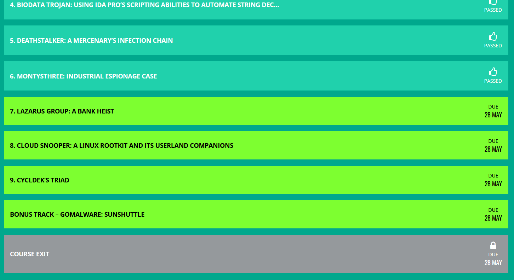
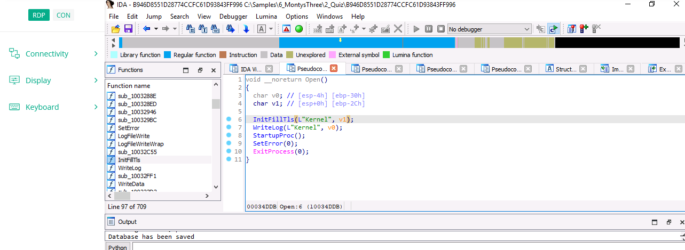
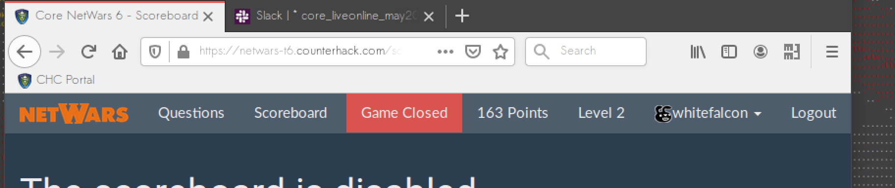

This is a short review of and some thoughts about the Targeted Malware Reverse Engineering course currently offered through Kaspersky's online training platform.
Pros:

Cons:
I've created a short cheat sheet for mapping C data structures to assembly - you can find it here. It's based largely on Dennis Yurichev's book Reverse Engineering for Beginners.
How to pass program parameters to the Ghidra debugger (now integrated into the master branch) - answer with screenshots here.
Others may find this useful - this is my
makefile for assembling and linking 32-bit files with yasm and gcc on
Linux:
testfile: testfile.o
gcc -m32 -o testfile
testfile.o
testfile.o: testfile.asm
yasm -f elf32 testfile.asm -l testfile.lst
After finally receiving my entry-level penetration testing certificate from Virtual Hacking Labs, I decided I need to tackle assembly. I'm still not comfortable doing stack overflows and am years away from being prepared to take the OSCP exam.
I've browsed though several x86 assembly resources, including the excellent book "Assembly Language Step-by-Step" by Jeff Duntemann. After a few months, I finally came across a very practical resource with a repository of x86 exercises and solutions, plus video lectures. It's offered by xorpd, who seems to be an experienced reverse engineer. I've been pleased by the assembly course so far and do highly recommend it. The exercises are the key to mastery and I must say they are very well done (and available for free if you don't care to pay for the video lectures).

So I participated in my first CTF the other
day. For about 6-8 months now, I've been slowly learning all about
penetration testing. It started as an interest in web app pen testing
and now I'm taking a more general approach. Anyway, the people at SANS
made their NetWars available for free this year and I signed up just to
see what it's like.
Well...it's intense for sure. 2 days, 8
hours total of problem solving on a VM. I got to Level 2, only a few
points away from Level 3 but light years away from people at Level 5 who
someohow got 600+ points. One of the most interesting questions had to
do with the Volatility tool for memory dump analysis. Given a process
ID, Volatility can analyze that process and uncover what a user was
doing. As in, what someone was typing in Notepad.exe at a given time.
Really cool and disconcerting at the same time.
I'm a developer with a passion for art. I have a wide range of interests including reverse engineering, mobile application development, mixed media art and screenwriting.